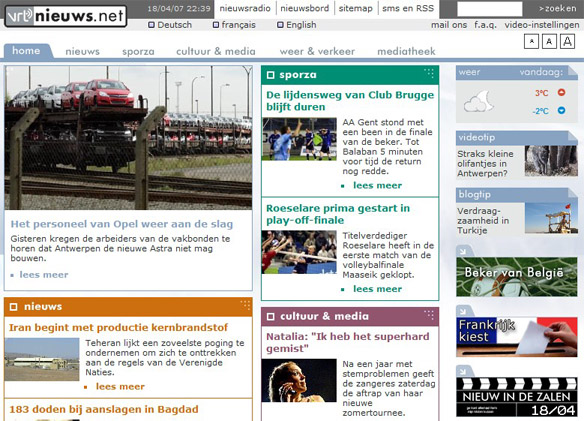

OBJECTS
use the arrow keys to navigate; press space for slide overviewOBJECTS
History
Objects in the browser
- Objects = all elements not native to the browser (images, flash, applets, sound...)
- License problems (e.g. mp3 is not supported in Firefox)
- Extra plugins may be required (Flash, Silverlight...)
- In HTML: historically a difficult matter
Embedding Flash (1)
-
Use
<object>:<object align="middle" width="700" height="520" data="index.swf" type="application/x-shockwave-flash"> <param name="quality" value="high"> <param name="bgcolor" value="#006600"> <param name="play" value="true"> <param name="loop" value="true"> <param name="wmode" value="window"> <param name="scale" value="showall"> <param name="menu" value="true"> ... </object>
Embedding Flash (2)
-
Be nice to older systems, provide Flash version detection with Javascript:
<!DOCTYPE html> <html> <head> <title>intro</title> <meta content="utf-8" /> <script src="swfobject.js"></script> <script> // Adobe recommends that developers use SWFObject2 // for Flash Player detection (see.the SWFObject page // at http://code.google.com/p/swfobject/. // Set to minimum required Flash Player version or // 0 for no version detection --> var swfVersionStr = "9.0.45"; // use xiSwfUrlStr to define an express installer SWF. var xiSwfUrlStr = ""; var flashvars = {}; var params = {}; params.quality = "high"; params.bgcolor = "#006600"; params.play = "true"; // ... define more parameters var attributes = {}; attributes.id = "intro"; attributes.name = "intro"; attributes.align = "middle"; // ... define more attributes swfobject.createCSS("html", "height:100%; background-color: #006600;"); swfobject.createCSS("body", "margin:0; padding:0; overflow:hidden; height:100%;"); swfobject.embedSWF( "intro.swf", "flashContent", "864", "618", swfVersionStr, xiSwfUrlStr, flashvars, params, attributes); </script> </head> <body> <!-- SWFObject's dynamic embed method replaces this alternative HTML content for Flash content when enough JavaScript and Flash plug-in support is available. --> <div id="flashContent"> <a href="http://www.adobe.com/go/getflash"><img src="img/get_flash.gif" alt="Get Flash player" /></a> <p> This page requires Flash Player version 9.0.45 or higher. </p> </div> </body> </html>
ten disadvantages of Flash
(and plugins in general)- Flash requires a plugin
- Flash is often buggy and eats battery life
- Flash is not supported on many mobile devices (iPad, iPhone, Firefox or Chrome mobile...)
- Flash sites are generally bandwidth-heavier
- Flash ignores browsing history, back button does not work
- individual Flash pages cannot be bookmarked
- coupling with a decent CMS or even design changes are virtually impossible
- font sizes, which are often very small in Flash sites, are not adjustable by the user
- Flash is not accessible for the blind, therefore it is forbidden for public sites
- search engines do not like Flash
Embedding Applets
- Applets are written in Java
- Mostly used in technical/scientific situations
-
Use
<object>:<object type="application/x-java-applet" height="300" width="540" > <param name="code" value="shm.class"> <param name="yellow" value="yellow" /> <param name="blue" value="blue" /> <param name="bgColor" value="lightGray" /> <param name="Reset" value="Reset" /> <param name="Start" value="Start" /> <div> <p> This applet requires Java 1.4.2 or higher. <a href="http://www.java.com/en/download/index.jsp"> Get the latest Java Plug-in. Then you should see a result similar to this: <img src="img/applet.png" /> </a> </p> </div> </object>
OBJECTS
Audio & video
Audio and video
- These days still done with Flash based players
-
HTML5 provides
<audio>and<video>tags<audio src="media/paoloconte.mp3" controls width="670" style="border: solid 3px black; margin:200"> Your browser dows not support the audio tag </audio><video src="media/tango.mp4" controls poster="img/meloYBratt.jpg" width="320" height="240"> Your browser dows not support the video tag </video>
Formats
- Major video formats: mp4, ogg and webm (but more exist)
- Major audio formats: mp3, ogg and wav (but more exist)
-
Different media for different systems:
<video poster="img/poster.jpg"> <source src="media/video.3gp" type="video/3gpp" media="handheld"> <source src="media/video.ogv" type="video/ogg; codecs=theora, vorbis"> <source src="media/video.mp4" type="video/mp4"> </video> <audio> <source src="media/music.oga" type="audio/ogg"> <source src="media/music.mp3" type="audio/mpeg"> </audio> -
- Firefox doesn't support mp3/aac/mp4 (patents!)
- IE doesn't support oga/ogv/wav/webm
- Safari doesn't support oga/ogv/webm
Compatibility issues
-
Several problems remain unsolved today:
- no single format supported by all major browsers
- HTML5 <audio> and <video> elements not supported by all browsers, or even worse, buggy
- Flash alternatives only work on Flash-supported devices
-
Solutions:
- use a specalized media library like mediaElement
- or, upload your video to Youtube and embed the code from there
Custom controls
-
Build custom controls with Javascript:
<!DOCTYPE html> <html lang="en"> <head> <title> HTML5 testpage </title> <meta charset="utf-8" /> <script> window.onload = function() { var video = document.getElementById("video"); video.controls = false; document.getElementById("lnkPlay").onclick = function() { if (video.paused) video.play(); else video.pause(); return false; } document.getElementById("lnkMute").onclick = function() { if (video.volume > 0) video.volume = 0; else video.volume = 1; return false; } document.getElementById("inpSeek").onchange = function() { video.currentTime = this.value; } } </script> </head> <body> <video src="media/tango.mp4" poster="img/meloYBratt.jpg" width="320" height="240" id="video" controls> Your browser dows not support the video tag </video> <nav id="myControls"> <a href="#" id="lnkPlay">play</a> <a href="#" id="lnkMute">mute</a> <input type="range" min="0" max="211" value="0" id="inpSeek" /> </nav> </body> </html>
Styling
-
Even styling with CSS is possible:
#testvideo { transform: rotateZ(5deg); -webkit-box-shadow: rgba(0, 0, 128, 0.25) 10px 10px 15px #990; }<video src="media/tango.mp4" controls poster="img/meloYBratt.jpg" width="360" height="240" id="testvideo"> Your browser dows not support the video tag </video> -
Think of the nice things you could do:
- background video (1, 2, 3...)
- CSS filtering video
OBJECTS
Images
The <img /> tag
- Yes, images are objects too, for which browser support is not evident (patents!)
-
W3C briefly experimented with an
<object>version, but the<img />tag survived: -
Attribute
altwith relevant description is required for the vision-impaired; thetitleattribute is optional and is often implemented as tooltip<img src="img/06_html_objects/photo.jpg" alt="picture of my brothers" title="these are my beloved brothers" />
figure and figcaption
-
Add a caption with
<figure>and<figcaption>(introduced in HTML5):<figure> <img src="img/06_html_objects/photo.jpg" alt="picture of my two brothers" /> <figcaption>picture of my two brothers</figcaption> </figure> -
A
<figure>may contain multiple images:<figure> <img src="img/06_html_objects/horse1.jpg" alt="drawing step1" /> <img src="img/06_html_objects/horse2.jpg" alt="drawing step2" /> <img src="img/06_html_objects/horse3.jpg" alt="drawing step3" /> <figcaption>how to draw a horse</figcaption> </figure>
Actually a figure can be used for anything that can be placed outside the main text. Literally from the W3C:
The figure element represents a unit of content, optionally with a caption, that is self-contained, that is typically referenced as a single unit from the main flow of the document, and that can be moved away from the main flow of the document without affecting the document’s meaning.
Design or content? (1)
- Caution! Images for design should be inserted by CSS, not by HTML
-
These images are independent of design, and should be coded:
- photo's illustrating an article
- logo's of other companies
- banners
- ...
-
These images are part of design, and should be ignored:
- graphic buttons
- your own logo
- background images
- ...
Design or content? (2)
Identify which images are design and which are content:
Design or content? (3)
Identify which images are design and which are content: